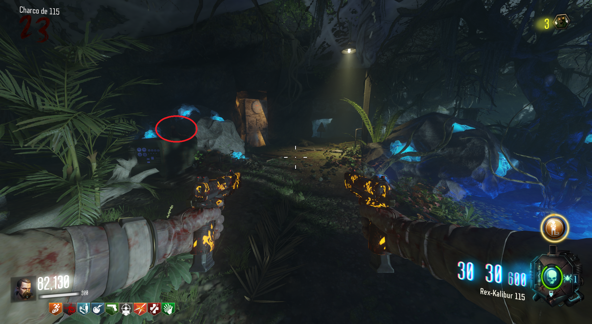
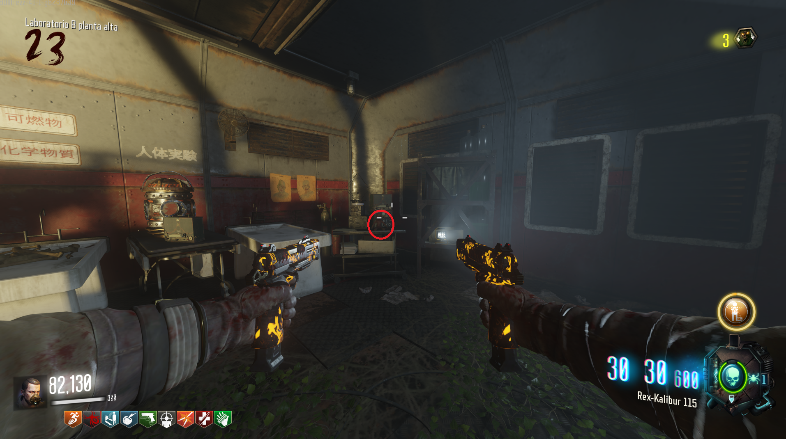
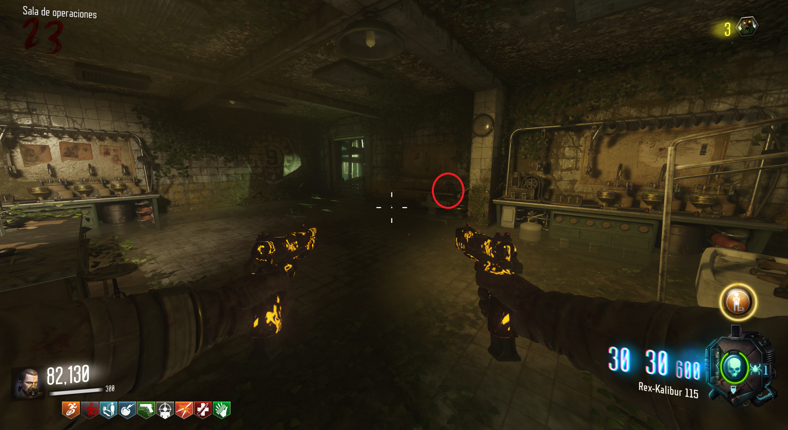

Tendremos que buscar tres monos en el mapa e interactuar con ellos. Mono 1: En Laboratorio A, antes de la cueva de la araña, encima de unas cajas.
 Mono 2 : En la zona más alta del Laboratorio B, encima de una mesa.
 Mono 3 : En la zona baja del búnker, a la izquierda de donde se construye la Masamune, encima de una camilla.
